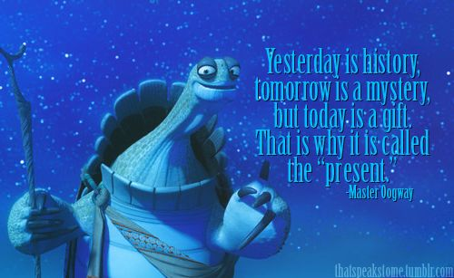

Cosas sobre mí
- Desde las montañas nebulosas, donde el viento susurra secretos antiguos, hasta los valles donde la luz del sol acaricia las hojas verdes, mi historia se teje con hilos de aventura y valor.
- Aprendí el arte del kung-fu entre los maestros más sabios, cuyos consejos resonaban en mis oídos como melodías ancestrales, guiándome en cada paso de mi camino.
- Con mi armadura reluciente, forjada en el fuego de la determinación y la pasión, enfrento a mis enemigos con la fuerza de un dragón en pleno vuelo, sin miedo al desafío que se presente.
- Aunque la oscuridad acecha en cada esquina y el peligro acecha en las sombras, mi corazón se mantiene firme, iluminado por la luz de la esperanza y el amor por la justicia.
- En mis viajes, he visto maravillas más allá de la imaginación y he enfrentado peligros que pondrían a prueba incluso al guerrero más valiente, pero mi espíritu nunca se ha quebrado.
- Mi risa resuena en los valles y mi corazón se abre a aquellos que necesitan ayuda, extendiendo una mano amiga a quienes buscan consuelo en tiempos de dificultad.
- Con cada batalla ganada y cada desafío superado, mi habilidad en el combate y mi sabiduría crecen, como las ramas de un árbol fuerte arraigado en la tierra fértil.
- Honro las tradiciones de mis ancestros y busco la verdad en los antiguos pergaminos y enseñanzas, encontrando en ellos la guía para mi viaje.
- Mi nombre se convierte en leyenda, tejido en los cuentos de aquellos que buscan inspiración y esperanza en un mundo lleno de incertidumbre y peligro.
- Como el guerrero del dragón, mi historia continúa, escrita en las estrellas y grabada en los corazones de aquellos que creen en el poder del coraje y la bondad.
Palabras que me enseñaron mis maestros... y ahora a ti
"El ayer es historia, el mañana es un misterio, pero hoy es un regalo. Por eso lo llaman presente" - Maestro Oogway

"Cualquier cosa es posible cuando se tiene paz interior", Maestro Shifu
Ha llegado tu hora... De avanzar en tu viaje